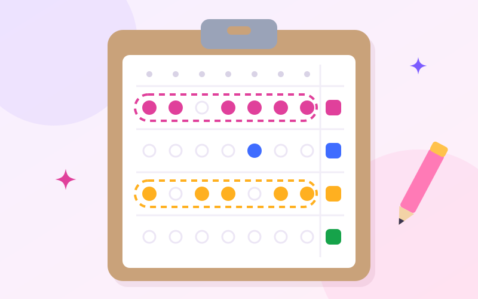
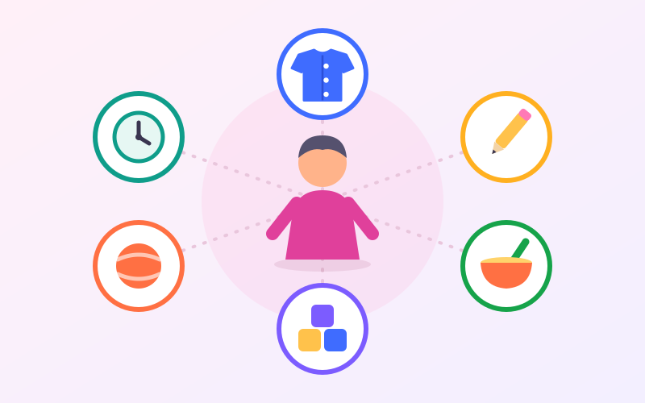
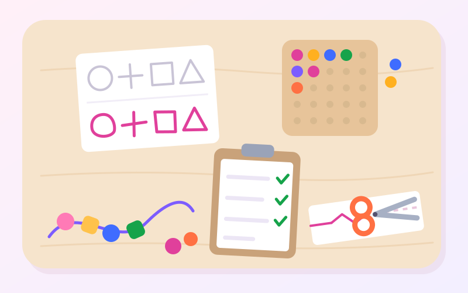

نشانهها و ارزیابی
آیا کودکم به کاردرمانی نیاز دارد؟ نشانههایی که ارزش بررسی دارند
لباس پوشیدن، نوشتن، غذا خوردن، بازی و روال روزانه؛ اینها «کارهای» یک کودکاند. اگر کودکتان در چند تا از این کارها مدتی است به دردسر افتاده، این راهنما کمک میکند ببینید کدام نشانهها ارزش بررسی دارند؛ بیآنکه هیچکدام را بهتنهایی تشخیص بدانید.

پیش از فهرست: یک نشانه، تشخیص نیست
دامنهی رشد طبیعی کودکان پهن است. کودکی که هنوز بند کفشش را نمیبندد یا از قیچی بدش میآید، ممکن است فقط کمتر تمرین کرده باشد، خسته یا بیحوصله باشد، یا علاقهاش جای دیگری باشد. هر نشانهی این مقاله میتواند دلیلهای زیادی داشته باشد؛ پس بهجای تکتک نشانهها، به این چهار پرسش نگاه کنید:
- الگو: آیا چند نشانه با هم دیده میشود، یا فقط یکی؟
- ماندگاری: آیا هفتهها و ماهها ادامه داشته، یا به یک دورهی خاص (بیماری، جابهجایی، تولد خواهر یا برادر) مربوط است؟
- اثر روی زندگی: آیا کودک را از بازی، یادگیری یا بودن با دیگران بازمیدارد، یا باعث ناامیدی و دوریاش از کارها شده است؟
- همهجا یا یکجا: آیا در خانه، مهد یا مدرسه و نزد افراد مختلف دیده میشود؟

یک نکتهی دیگر: تشخیصهایی مثل اوتیسم یا ADHD را پزشک متخصص میگذارد. ارزیابی کاردرمانی چیز دیگری میپرسد: کودک در کدام کارهای روزمره به کمک نیاز دارد، چرا، و چطور میشود به او کمک کرد.
شش حیطهی روزمرهای که ارزش نگاه کردن دارند
کاردرمانی کودکان بهجای «بیماری»، به کارهای روزمرهی کودک نگاه میکند. نشانههای پایین در شش حیطه دستهبندی شدهاند: لباس پوشیدن و مراقبت از خود، نوشتن و دستورزی، غذا خوردن، بازی، هماهنگی حرکتی، و روال روزانه و واکنشهای حسی.

لباس پوشیدن و مراقبت از خود
- در ۴ تا ۵ سالگی هنوز برای درآوردن و پوشیدن لباسهای ساده به کمک زیادی نیاز دارد.
- بستن دکمه، زیپ یا بند کفش، مدتها پس از همسالانش برایش بسیار سخت است.
- ترتیب پوشیدن را گم میکند یا جلو و پشت لباس را با وجود تمرین تشخیص نمیدهد.
- مسواک زدن، شانه کردن مو، کوتاه کردن ناخن یا حمام برایش بهشدت ناخوشایند است.
روشهای عملی یاد دادن این مهارت در چگونه به کودک یاد بدهیم خودش لباس بپوشد؟ آمده است.
نوشتن، رنگآمیزی و قیچی
- مداد را مشت میکند یا گرفتنش در طول زمان بهتر نمیشود.
- خیلی زود از نوشتن یا رنگآمیزی خسته میشود، یا آن را کاملاً کنار میگذارد.
- دستخطش با وجود تمرین بهسختی خوانده میشود؛ حروف بیاندازه، بیفاصله یا خارج از خطاند.
- کار با قیچی، چسب یا مهره در سن مدرسه برایش بسیار دشوار است.
- بیش از حد به کاغذ فشار میآورد یا خطهایش آنقدر کمرنگ است که دیده نمیشود.
بخوانید: چگونه گرفتن مداد و دستخط کودک را بهتر کنیم؟ و ۱۵ فعالیت برای مهارتهای حرکتی ظریف.
غذا خوردن
- حدود دوسالگی هنوز تلاشی برای خوردن با دست یا قاشق نمیکند.
- فهرست غذاهایش بسیار محدود است و با دیدن، بو یا بافت غذای تازه عُق میزند.
- کار با قاشق و چنگال برایش بسیار سختتر از همسالانش است.
- نشستن تا آخر وعده برایش تقریباً ناممکن است.
سرفه یا خفگی مکرر هنگام خوردن، یا کاهش وزن، اول به بررسی پزشک کودک نیاز دارد. بیشتر بخوانید: مهارتهای غذا خوردن در کودکان.
بازی
- از بازیهای ساختنی، پازل یا نقاشی که همسالانش دوست دارند، مدام دوری میکند.
- بازیاش محدود و تکراری است و بهسختی بازی تازهای را امتحان میکند.
- تقلید حرکتها یا ادامه دادن یک بازی سادهی دونفره برایش دشوار است.
- پیوستن به بازی بچههای دیگر یا کنار آمدن با باخت در بازی برایش بسیار سخت است.
بازی، زبان کودک است؛ صفحههای بازیدرمانی و مهارتهای اجتماعی این بخش را بیشتر توضیح میدهند.
هماهنگی حرکتی و تعادل
- بیش از همسالانش زمین میخورد یا به وسایل و آدمها برخورد میکند.
- بالا و پایین رفتن از پله، پریدن یا لیلی کردن برایش سخت است.
- گرفتن و پرتاب توپ، دوچرخهسواری یا وسایل پارک را یاد نمیگیرد یا از آنها دوری میکند.
- زود خسته میشود، هنگام نشستن روی میز ولو میشود یا سرش را به دستش تکیه میدهد.
این نشانهها به حیطهی مهارت درکیـحرکتی مربوطاند.
روال روزانه، واکنشهای حسی و هیجان
- جابهجایی از یک کار به کار دیگر تقریباً همیشه با گریه یا مقاومت طولانی همراه است.
- به صدا، لمس، برچسب لباس، شلوغی یا بوها واکنشی بسیار شدیدتر از دیگران نشان میدهد.
- برعکس، دنبال حرکت و فشار شدید است؛ مدام میپرد، میچرخد یا خودش را به وسایل میکوبد.
- آرام شدن پس از ناراحتی برایش خیلی طول میکشد.
- دنبال کردن روالهای چندمرحلهای متناسب با سنش برایش بسیار دشوار است.
برای روالها، برنامهی تصویری برای کودکان را ببینید؛ و برای رفتارهای تکرارشونده، صفحهی رفتاردرمانی را.
چه وقت ارزیابی بگیریم؟
اگر چند نشانه از یک یا چند حیطه را برای مدتی طولانی میبینید، یا یکی از این موارد دربارهی کودکتان درست است، یک جلسهی ارزیابی میتواند تصویر روشنتری بدهد:
- معلم یا مربی مهد نگرانی مشابهی را مطرح کرده است.
- کودک خودش متوجه دشواری شده، ناامید میشود یا از کارهایی که همسالانش انجام میدهند دوری میکند.
- کارهای روزمره هر روز وقت و انرژی زیادی از خانواده میگیرد.
- با وجود تمرین در خانه، چند ماه است پیشرفتی نمیبینید.
- بهعنوان پدر یا مادر، حس میکنید چیزی درست نیست؛ پرسیدن اشکالی ندارد.
اگر کودک مهارتی را که قبلاً داشته از دست داده است — مثلاً دیگر حرف نمیزند، راه رفتنش تغییر کرده یا یک طرف بدنش ضعیفتر شده — بدون معطلی با پزشک کودک مشورت کنید.
ارزیابی همیشه به معنای شروع درمان نیست. گاهی نتیجه این است که رشد کودک در محدودهی طبیعی است و چند پیشنهاد ساده برای خانه کافی است؛ همین هم خیال خانواده را راحت میکند.
در جلسهی ارزیابی چه اتفاقی میافتد؟
- گفتوگو با والدین: تاریخچهی رشد، نگرانیهای شما، روال روزانه و نظر معلم یا مربی.
- مشاهده در بازی: بیشتر ارزیابی با بازی انجام میشود تا کودک حس امتحان دادن نکند.
- آزمونهای استاندارد در صورت نیاز؛ مثلاً برای مهارتهای حرکتی، ادراک بینایی یا پردازش حسی.
- جمعبندی و پیشنهاد: تمرینهای خانه، دورهی کوتاه درمان، درمان منظم، یا ارجاع به متخصص دیگر مثل پزشک کودک، گفتاردرمانگر یا روانشناس.

پیش از جلسه چه آماده کنیم؟
- یادداشت یک یا دو هفته: چه دیدید، کجا، چند بار و چه چیزی کمک کرد.
- نمونهی کار: چند نقاشی، دفتر مشق یا کاردستی کودک.
- نظر مدرسه یا مهد: گزارش یا حتی چند جملهی نوشتهشده از معلم.
- فیلم کوتاه: اگر رفتاری فقط در خانه دیده میشود، مثل لحظهی لباس پوشیدن یا وعدهی غذا.
- فهرست پرسشها و گزارش ارزیابیهای قبلی، اگر دارید.
برای آشنایی کامل با این مسیر، کاردرمانی کودکان چیست؟ را بخوانید. اگر دور از کلینیک هستید، ارزیابی اولیه و بسیاری از هدفها در کاردرمانی ذهنی کودکان آنلاین هم قابل پیگیری است.
این مقاله برای آگاهی والدین نوشته شده و جای ارزیابی تخصصی را نمیگیرد. دیدن یک یا چند نشانهی این فهرست به معنای وجود اختلال نیست.
-
-

نوشتن و مدرسه
چگونه نحوهی گرفتن مداد و دستخط کودک را بهتر کنیم؟
-

راهنمای والدین
کاردرمانی کودکان چیست؟ راهنمای کامل برای والدین